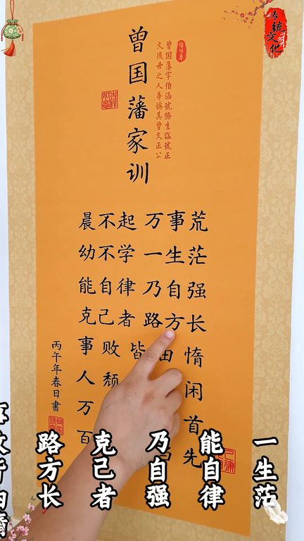
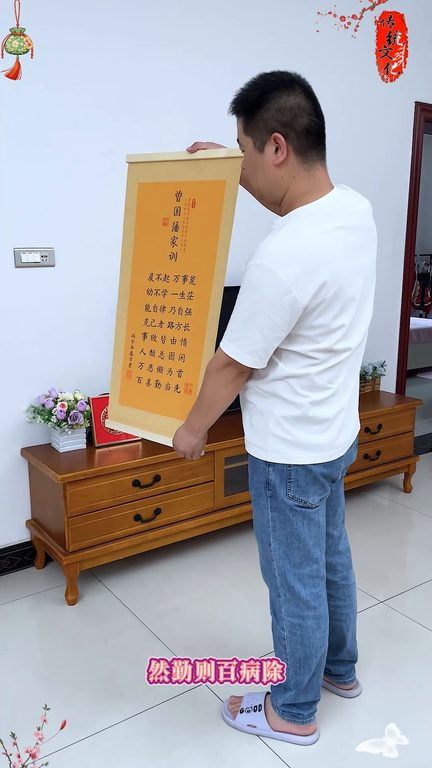

TOP 1 · 代表素材深度拆解
核心放量 点击承压
视频为原始素材 HTTPS 链接；点击后加载，建议在网络环境良好时播放。
33.2万素材消耗
1.70%CTR
61.9%类目消耗占比
-0.90pp较类目均值
表现判断
该素材是类目内第 1 名，属于“核心放量”；CTR 低于类目均值。消耗体现承接规模，CTR 体现首屏与定向效率，两项应结合判断，不能仅以单指标下结论。
表达标签
口播三段式证据
开场钩子有儿子的给儿子的房间挂上这个就直接给他挂上就行其他也不要多问你听话照做就好臣不请万事光诱惑学一生忙
中段论证课急证路方畅世败皆由度人腿只阴险万恶兰为首百善秦当先亲爱的先生人生之百非傲极懒二者必知其一然情则百必出臣不起万事荒
结尾转化臣不起万事荒诱惑学一生忙自律的人往往有着极大的自控力而能控制自我的人方能控制人生世败皆因懒人肺皆因险家败皆因奢懒悔所有然情则百必出
有效点
- 消耗占比 61.9% 说明具备投放承接能力，但 CTR 较类目均值低 0.90pp
- 素材已进入类目消耗 Top，核心表达具备继续拆分测试的价值
迭代动作
- 重做前 3–5 秒：结果前置、缩短背景铺垫，并把核心人群直接写进首屏字幕
- 中段每 5–8 秒补一次画面变化或证据点，避免同景口播造成信息疲劳
- 促销口径与资质信息保持同屏可验证，结尾只保留一个明确行动指令
合规关注
钩子建立 · 2.7s

场景/问题展开 · 20.6s
卖点证据 · 47.3s

转化收口 · 65.2s
查看完整口播摘要
有儿子的给儿子的房间挂上这个就直接给他挂上就行其他也不要多问你听话照做就好臣不请万事光诱惑学一生忙能自律乃自强课急证路方畅世败皆由度人腿只阴险万恶兰为首百善秦当先亲爱的先生人生之百非傲极懒二者必知其一然情则百必出臣不起万事荒诱惑学一生忙自律的人往往有着极大的自控力而能控制自我的人方能控制人生世败皆因懒人肺皆因险家败皆因奢懒悔所有然情则百必出